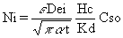
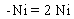
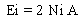
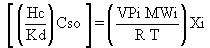
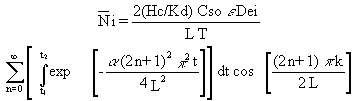

2.6 CONTAMINATED SOIL MODELS
Contaminated soil can be caused by leaks or spills of hazardous liquid
or solid materials, or improper treatment, storage, or disposal of the
such materials. Volatile components contained in the soil medium can be
a major source of pollutant air emissions. The degree of volatile emissions
from soil will depend upon the type of the contaminant, the chemical and
physical properties of the contaminant, and the physical characteristics
of the medium and the site.
The rate of volatile emission from contaminated soil may be increased by
remediation activities. Old hazardous waste sites containing volatile constituents
may not emit vapors in significant amounts, but disturbing the soil in
the process of remediation can redistribute the concentration profile across
the soil depth, and can increase emission rates from the soil significantly.
2.6.1 Contaminated Soil Gradient Model
Hwang
and Falco (1986) developed a model for estimating emission rates of volatile
and semivolatile components in soil by solving a partial differential equation
describing the process of diffusion and partitioning occurring within the
soil. The solutions are presented for two cases: one case for predicting
the emission rate from soil when there is no clean cover on top of soil
and another case for predicting the emission rate when a clean soil cover
is applied on top of soil immediately after remediation.
2.6.2 Contaminated Soil Gradient Model Without A Clean Soil Cover
This
model based on Hwang and Falco (1986) is implemented as a volatilization
source model referred to as "Contaminated Soil" (AG-VCASE = 5) in the user-interface
of MEPAS 3.n versions. The "Contaminated Soil" model is one of the models
recommended by the EPA (1990) for estimating emission rates from contaminated
soil as part of the Superfund exposure and risk assessment process.
The physical basis of the model is as follows. The contaminant in the soil
is assumed to be initially distributed uniformly across the soil depth
and across the depth up to the surface (e.g., without a clean soil cover
on the surface). As emissions occur from the soil surface, the concentration
gradient across the depth in the vertical direction is established. This
concentration gradient limits the emission rate as time elapses. Under
these conditions, Hwang and Falco (1986) present the following model for
estimating the transient volatilization rate at some time, t:

(12)
where Ni = emission rate of contaminant i
per unit surface area (g/cm2/s)
e= air-filled porosity of soil (dimensionless)
Dei = effective diffusivity defined as Di e1/3
(cm2/s)
Di = molecular diffusivity of contaminant in soil air pore (cm2/s)
Hc = concentration-based Henry's Law constant, or concentration in air/phase/concentration
in water phase (dimensionless), which is computed as H / R T
H = Henry's Law constant (atm m3/mole)
R = gas constant (8.2 x 10-5 atm m3 /° K-mole
T = temperature (° K)
Kd = soil-water partition coefficient (cm3/g)
t = time (s)
Cso = initial (t=0) contaminant concentration in soil (g/g)
a = a term defined as (Dei e/[e+
Ps (1-e)
Kd/Hc]) (cm2/s)
Ps = true density of soil, g/cm3.
The emission rate estimated by Equation 12 represents an instantaneous
emission rate at any time t. The emission rate shown by this equation decreases
as a function of time. The emission rate averaged over a long-term period
can be obtained mathematically by integrating the instantaneous emission
rate over the exposure period and dividing it by the exposure period. The
result is

(13)
The total average emission is obtained by
multiplying the emission rate in Equation 13 by the emission area,

(14)
where Ei = emission rate of constituent i
(g/s)
A = emission area (cm2).
The emission rate from soil contaminated by organic compounds can be estimated
from Equation 12 where the soil-air partition coefficient is defined by
Hc/Kd and the value for Kd is related to the value of the octonal-water
partition coefficient, Koc. In some special cases where the Koc values
are not known and the compounds exert vapor pressures, Equation 12 can
be modified to estimate the emissions. Examples of these special cases
include soil contaminated with mercury or tritiated water in a mixture
with water. Vapor pressures of the compounds in the soil pores provide
a driving-force for air emissions and the driving-force term, (Hc/Kd) Cso,
requires modification to estimate the transient emission rate. The term,
(Hc/Kd) Cso, represents the concentration of a contaminant in the air space
of soil pore at the beginning of contamination, and hence can be replaced
by

(15)
where VPi = vapor pressure of constituent i (mmHg)
MWi = molecular weight of constituent i (g/g-mole)
Xi = weight fraction of constituent i in soil (g/g).
Contaminated Soil Gradient Model With A Clean Soil Cover
Covering
a contaminated soil site with a layer of clean soil may decrease the rate
of volatile emissions. The extent to which the emission rate decreases
depends upon several factors including the partitioning behavior of the
contaminant between the soil and soil pore, volatility of the contaminant,
the cover thickness, and contaminant diffusivity through the soil pores.
For the case of having a clean soil cover, the partial differential equation
describing the physical phenomena of the volatilization process could not
be solved analytically at the appropriate boundary and initial conditions.
Hwang and Falco (1986) presented the solution in form of a converging series
using the techniques of the Fourier series.

(16)
where
L = depth to the bottom of contamination from the soil surface (cm), including
the depth of clean soil placed on top of contaminated layer
T = period over which emission rates are averaged (s)
k = depth of clean soil cover (cm)
N i = average emission rate of contaminant i over the exposure
period T which is equal to t2-t1, g/cm2-s;
when the initial exposure occurs at t1=0, the exposure period
T is equal to t2 in Equation 15, and the integration starts
from 0 to t2.
Other terms in Equation 16 are as defined
in Equation 12. The summation in Equation 16 can be estimated with a computer.
At the date of publication of this report, the above model for contaminated
soil with a layer of clean soil is not implemented in MEPAS.